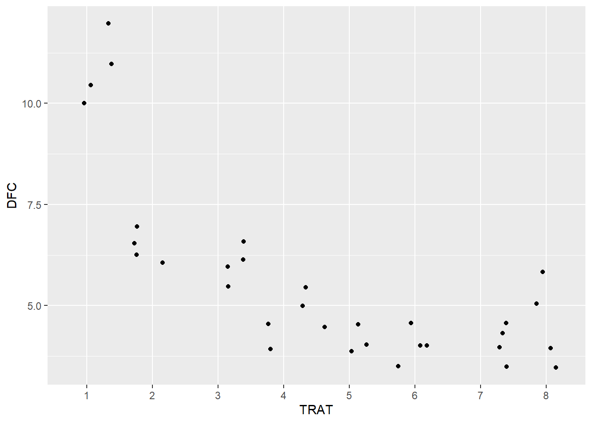
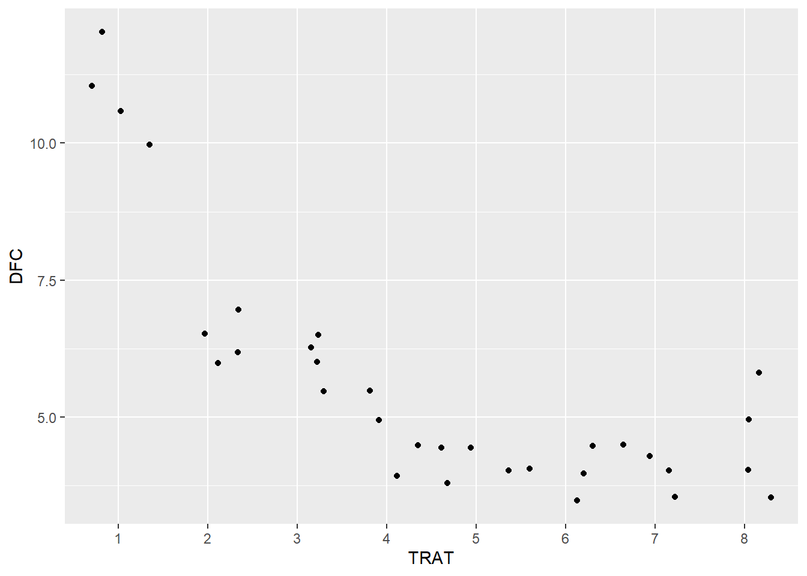
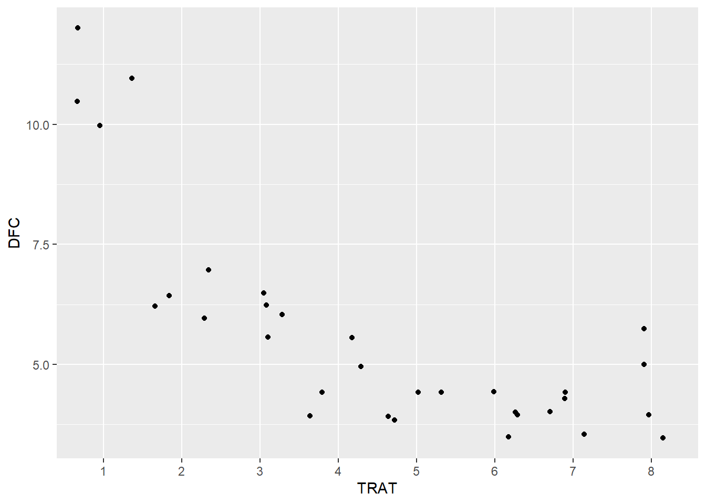
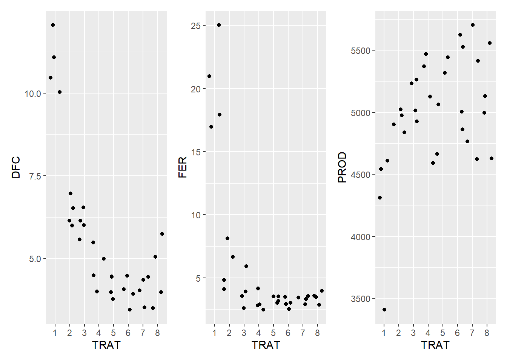
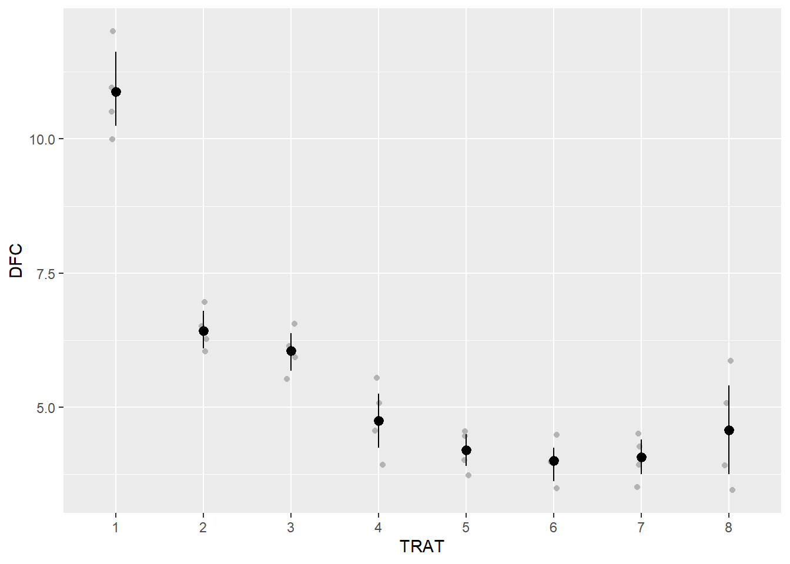
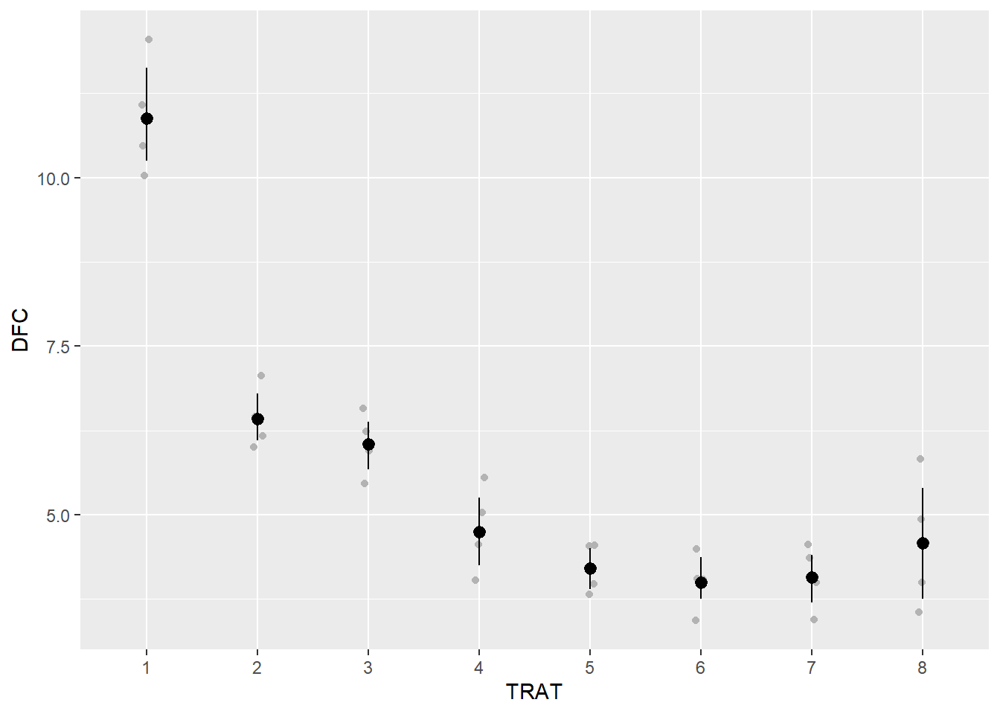
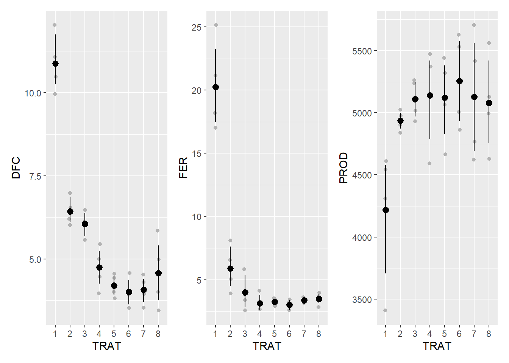

Warning: package 'TH.data' was built under R version 4.3.3
Carregando pacotes exigidos: MASS
Warning: package 'MASS' was built under R version 4.3.3
Attaching package: 'MASS'
The following object is masked from 'package:patchwork':
area
The following object is masked from 'package:dplyr':
select
Attaching package: 'TH.data'
The following object is masked from 'package:MASS':
geyser
library(agricolae)
Warning: package 'agricolae' was built under R version 4.3.3
library(epifitter)
Importação
soja <-gsheet2tbl("https://docs.google.com/spreadsheets/d/1bq2N19DcZdtax2fQW9OHSGMR0X2__Z9T/edit#gid=866852711")
Transformar para fator = preciso tranformar fator pois esta como número
soja <- soja |>mutate(TRAT =as.factor(TRAT),BLOCO =as.factor(BLOCO))is.vector(soja)
[1] FALSE
is.factor(soja$TRAT)
[1] TRUE
Vizualiza
dfc <- soja |>ggplot(aes(TRAT, DFC)) +geom_jitter(which =0.05)
Warning in geom_jitter(which = 0.05): Ignoring unknown parameters: `which`
dfc

fer <- soja |>ggplot(aes(TRAT, FER)) +geom_jitter(which =0.05)
Warning in geom_jitter(which = 0.05): Ignoring unknown parameters: `which`
dfc

prod <- soja |>ggplot(aes(TRAT, PROD)) +geom_jitter(which =0.05)
Warning in geom_jitter(which = 0.05): Ignoring unknown parameters: `which`
dfc

Para juntar os 3 graficos
(dfc+fer+prod)

dfc <- soja |>ggplot(aes(TRAT, DFC)) +geom_jitter(width =0.05, color ="gray70") +stat_summary(fun.data ="mean_cl_boot", color ="black")dfc

fer <- soja |>ggplot(aes(TRAT, FER)) +geom_jitter(width =0.05, color ="gray70") +stat_summary(fun.data ="mean_cl_boot", color ="black")dfc

prod <- soja |>ggplot(aes(TRAT, PROD)) +geom_jitter(width =0.05, color ="gray70") +stat_summary(fun.data ="mean_cl_boot", color ="black")dfc
(dfc+fer+prod)

anova DFC
aov_dfc <-lm(DFC ~ TRAT + BLOCO,data = soja)anova(aov_dfc)
Analysis of Variance Table
Response: DFC
Df Sum Sq Mean Sq F value Pr(>F)
TRAT 7 149.299 21.3284 51.5490 8.218e-12 ***
BLOCO 3 0.461 0.1537 0.3716 0.7743
Residuals 21 8.689 0.4138
---
Signif. codes: 0 '***' 0.001 '**' 0.01 '*' 0.05 '.' 0.1 ' ' 1
check_heteroscedasticity(aov_dfc)
OK: Error variance appears to be homoscedastic (p = 0.532).
check_normality(aov_dfc)
OK: residuals appear as normally distributed (p = 0.978).
TRAT emmean SE df lower.CL upper.CL .group
6 4.00 0.322 21 3.33 4.67 A
7 4.08 0.322 21 3.41 4.74 A
5 4.20 0.322 21 3.53 4.87 A
8 4.58 0.322 21 3.91 5.24 AB
4 4.75 0.322 21 4.08 5.42 AB
3 6.05 0.322 21 5.38 6.72 BC
2 6.42 0.322 21 5.76 7.09 C
1 10.88 0.322 21 10.21 11.54 D
Results are averaged over the levels of: BLOCO
Confidence level used: 0.95
P value adjustment: tukey method for comparing a family of 8 estimates
significance level used: alpha = 0.05
NOTE: If two or more means share the same grouping symbol,
then we cannot show them to be different.
But we also did not show them to be the same.
Anova FER
aov_fer <-lm(FER ~ TRAT + BLOCO,data = soja)anova(aov_fer)
Analysis of Variance Table
Response: FER
Df Sum Sq Mean Sq F value Pr(>F)
TRAT 7 978.87 139.838 55.1717 4.218e-12 ***
BLOCO 3 3.84 1.279 0.5045 0.6834
Residuals 21 53.23 2.535
---
Signif. codes: 0 '***' 0.001 '**' 0.01 '*' 0.05 '.' 0.1 ' ' 1
TRAT emmean SE df lower.CL upper.CL .group
6 0.523 0.0107 21 0.501 0.545 A
4 0.527 0.0107 21 0.505 0.550 A
5 0.539 0.0107 21 0.517 0.561 A
7 0.545 0.0107 21 0.523 0.567 A
8 0.549 0.0107 21 0.527 0.572 AB
3 0.553 0.0107 21 0.530 0.575 AB
2 0.596 0.0107 21 0.574 0.618 BC
1 0.637 0.0107 21 0.614 0.659 C
Results are averaged over the levels of: BLOCO
Confidence level used: 0.95
P value adjustment: tukey method for comparing a family of 8 estimates
significance level used: alpha = 0.05
NOTE: If two or more means share the same grouping symbol,
then we cannot show them to be different.
But we also did not show them to be the same.
Anova PROD
aov_prod <-lm(PROD ~ TRAT + BLOCO,data = soja)anova(aov_prod)
Analysis of Variance Table
Response: PROD
Df Sum Sq Mean Sq F value Pr(>F)
TRAT 7 2993906 427701 2.6367 0.04021 *
BLOCO 3 105665 35222 0.2171 0.88340
Residuals 21 3406431 162211
---
Signif. codes: 0 '***' 0.001 '**' 0.01 '*' 0.05 '.' 0.1 ' ' 1
check_heteroscedasticity(aov_prod)
OK: Error variance appears to be homoscedastic (p = 0.215).
#homegenidade de variancia e heteroscedasticidade é a mesma coisa check_normality(aov_prod)
OK: residuals appear as normally distributed (p = 0.542).
TRAT emmean SE df lower.CL upper.CL .group
1 4219 201 21 3800 4638 A
2 4935 201 21 4516 5354 AB
8 5078 201 21 4659 5497 AB
3 5110 201 21 4691 5529 AB
5 5122 201 21 4703 5541 AB
7 5128 201 21 4709 5546 AB
4 5140 201 21 4721 5559 AB
6 5256 201 21 4837 5675 B
Results are averaged over the levels of: BLOCO
Confidence level used: 0.95
P value adjustment: tukey method for comparing a family of 8 estimates
significance level used: alpha = 0.05
NOTE: If two or more means share the same grouping symbol,
then we cannot show them to be different.
But we also did not show them to be the same.
df_prod <-data.frame(medias_prod)df_prod |>ggplot(aes(TRAT, emmean))+geom_point()+ylim(3000,6500)+geom_errorbar(aes(min = lower.CL,max = upper.CL),width =0.1)+annotate (geom ="text", x =1.2, y =4200,label ="A")